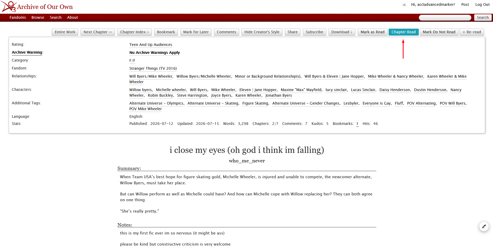
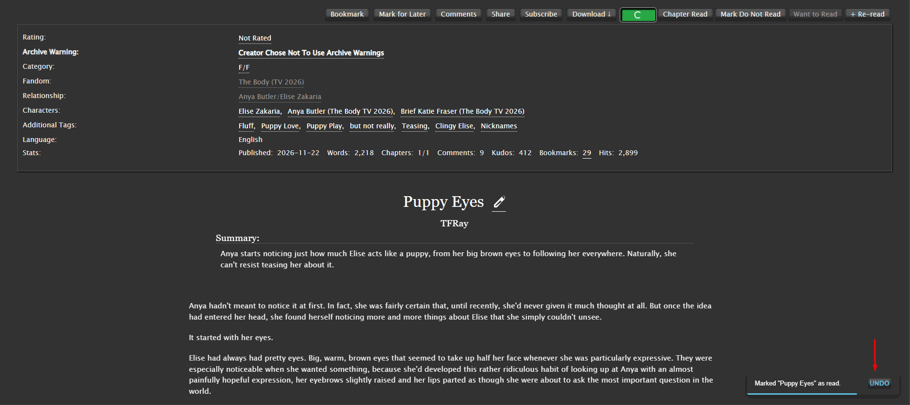
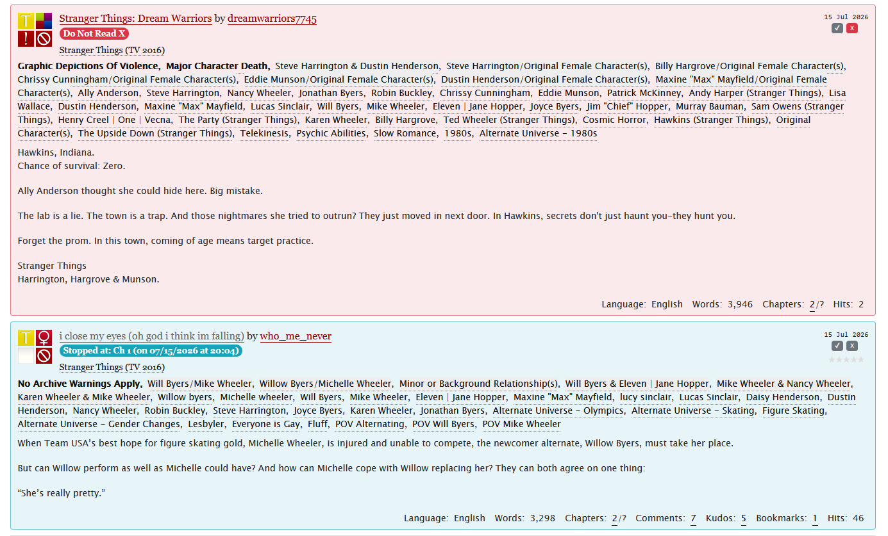
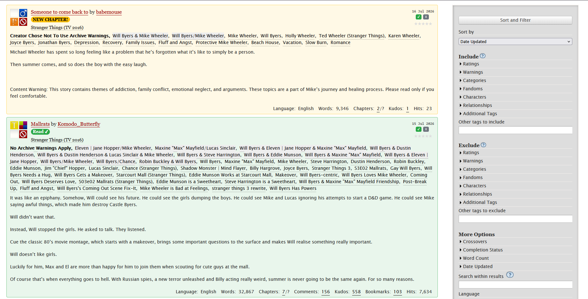
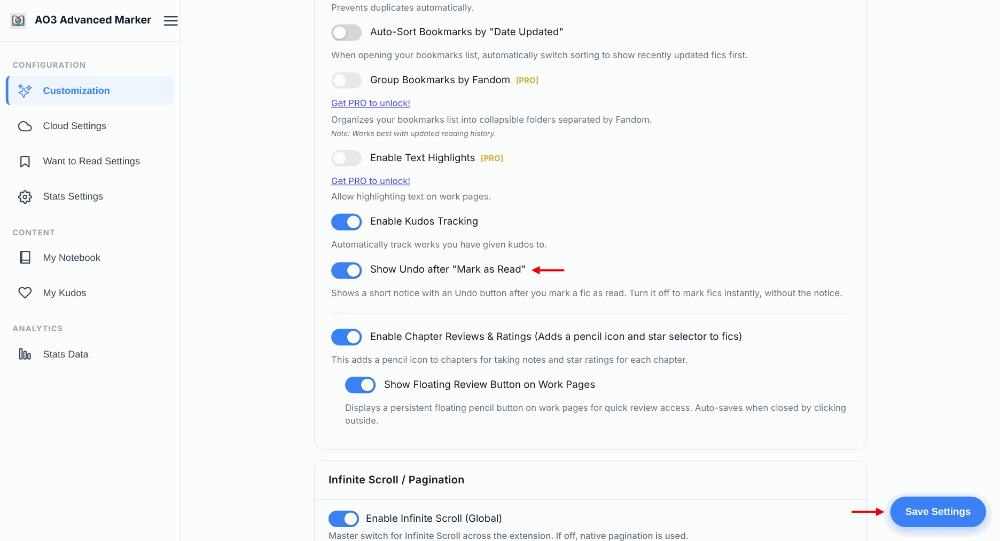

AO3 Advanced Marker was made to answer one question: have I read this already? Every fic you mark gets a status, and that status shows up on the fic's page and everywhere the fic appears in a list on AO3 — search results, tag pages and bookmarks.
A fic is either Read, stopped at a chapter (Chapter Read), Do Not Read, or unmarked. Choosing one status clears the others. All of this is free.
The Buttons on a Fic's Page
When you open a fic, the extension adds its buttons next to AO3's own buttons (Entire Work, Bookmark, Comments…):
- Mark as Read and Chapter Read — at the top and at the bottom of the page, so you can mark the fic as soon as you finish the chapter.
- Mark Do Not Read and + Re-read — at the top of the page.
A button fills with its status color when it's active, so you can tell the fic's status as soon as the page opens.

Mark as Read
Finished the fic? Click Mark as Read. The button changes to "Read ✔" and turns green.
- It replaces Chapter Read and Do Not Read, if the fic had one of them.
- If Reading Stats are on, the fic's words count toward your yearly goal. See the Reading Stats guide.
- If the fic was in your TBR (PRO), it leaves the TBR. See the Lists & TBR guide.
You can also mark a fic as read without opening it: in any list, click the ✔ button at the top right of the fic.
Changed your mind?
Right after you mark a fic as read, a notice with an UNDO button shows at the bottom right of the page for a few seconds. Click UNDO and nothing is saved. To unmark a fic later, click "Read ✔" (or the ✔ in a list) again.

You can turn it off so fics are marked instantly. See section 7.
Chapter Read: Save Where You Stopped
Reading a long fic? When you finish a chapter, click Chapter Read on that chapter. The extension saves the chapter and the date, and the button turns teal while you're on that chapter.
- Next time, click Chapter Read on the new chapter you finished. The saved chapter moves forward.
- In lists, the fic shows a teal badge such as "Stopped at: Ch 3 (on 07/15/2026 at 20:04)". Click the badge to go straight to that chapter and keep reading.
- If Reading Stats are on, the chapter's words count toward your yearly goal.
- When you finish the whole fic, click Mark as Read: it replaces the saved chapter.
- To clear the saved chapter, click Chapter Read again on the same chapter.
The chapter text hadn't finished loading. Wait a moment and click Chapter Read again.
Do Not Read
Found a fic you know you don't want to read? Mark it so you don't open it again by mistake.
- On the fic's page, click Mark Do Not Read (top of the page). The button changes to "Do Not Read X" and turns red.
- In a list, click the X button at the top right of the fic.
Do Not Read clears Read and the saved chapter. Click the same button again to remove it.
NEW CHAPTER!
When a fic you marked as read gets updated on AO3 after you marked it, it turns yellow in lists with a "NEW CHAPTER!" badge. That's your cue that there's more to read.
After you read the new chapter:
- If the fic is still in progress, click Chapter Read on the chapter you finished. The badge changes to "Stopped at".
- If you're done for now, open the fic, click "Read ✔" to unmark it and then Mark as Read again. This saves today's date and the fic goes back to green.
What You See in Lists
In search results, tag pages and bookmarks, each fic you marked gets a soft background color and a badge under its title:
- Read ✔ (green) — you marked it as read.
- NEW CHAPTER! (yellow) — you read it, and it was updated after that.
- Stopped at: Ch N (teal) — the chapter you stopped at, with the date. Click it to open that chapter.
- Do Not Read X (red) — you don't want to read it.
- To Be Read (purple, PRO) — it's in your TBR and you haven't started it. Fics in your lists also show small colored dots. See the Lists & TBR guide.
Fics you haven't marked stay as they are. At the top right of each fic you'll find the ✔ (Mark as Read) and X (Do Not Read) buttons; the one that's active is colored.


Every status color can be changed. See the Color System guide.
Turning the Undo Notice On or Off
The Undo notice after Mark as Read is on by default. To change it:
- Open the extension's Options Page and go to Customization.
- Turn "Show Undo after "Mark as Read"" on or off.
- Click Save Settings.
With it off, fics are marked as read the moment you click, with no notice.

+ Re-read
Reading a chapter again? Click + Re-read (top of the fic's page) to add that chapter's words to your reading stats again. The fic's status doesn't change. This only works when Reading Stats are on.